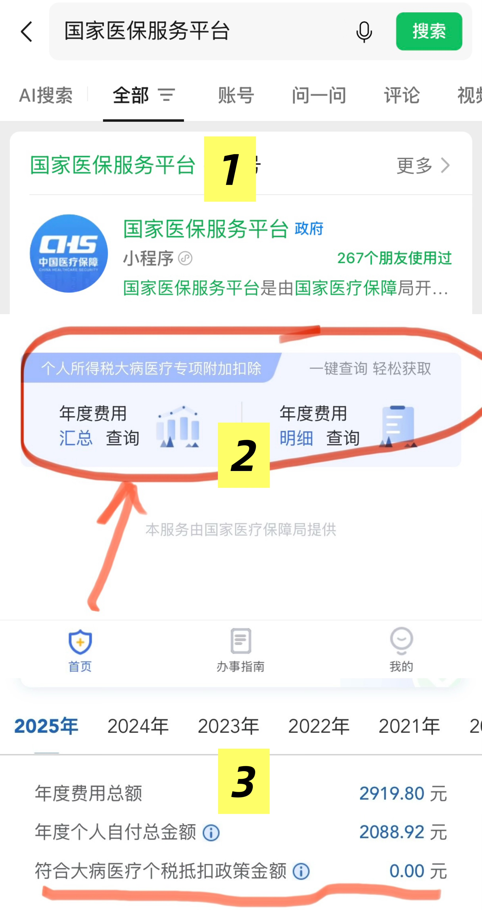

2025年个税汇算清缴了，先别急着填报❗一步选错直接少了几千块，亲测这个操作能多退两三千！
2025年个税汇算清缴了，先别急着填报❗一步选错直接少了几千块，亲测这个操作能多退两三千！

看图，清明节前刚帮我的两位互联网大厂客户做了个税申报，没想到平时叱咤职场的产品总监和技术专家，做个人汇算清缴时”菜"得像个小学生：一个少退9886，一个少退1800，我都帮他们一一追回。

条目比较多，但为了让你抓到其中的主要矛盾，我拿我一个税前年收入30~50万（税率20%）的客户老张为例，让你对各项退税金额有个感知。
这几项都退下来总共是 26880元的退税大红包，checklist如下：
-
年终奖改为单独计税： 省约8400元
-
赡养老人：省7200元
-
子女抚养教育：省4800元
-
住房贷款or租金：省2400 or 3600元
-
两项国补储蓄：省2880元
打开个税APP→进入「2025综合所得年度汇算」→选「标准申报」，准备发车！
1、年终奖计税方式：平均省约8400元！
这里是很多人从“退税”沦落到需要“补税”的重灾区，一定要自己手动试算！选错了可能相差最多上万元，30~50万税前的人选择单独计税可以节税3800~13000元。
两种方式：单独计税 / 并入综合所得计税。
切换入口：如果没有选择过，那在「收入」一栏的「工资薪金」会有红色小字”存在奖金，请在详情页中进行确认“→点击；
如果已选过，希望修改，则点进「工资薪金」→详情页顶部「奖金计税方式选择>」；

极简选择技巧：如下图，在APP里切换两种方式，先不提交，选交税少的。
- 之前的选错了怎么办？
这个也不用怕！近三年的填错的记录都是可以更正的，方法是选择要更正的「综合所得年度汇算」→点击底下的「更正」按钮，每年有5次线上更正机会。
具体拿今年6月30日之前来说，可以录入2025年，更正2022年、2023年、2024年的申报记录，但2021年和以前的退税就不能改了。
- 为什么我没看到“奖金计税方式”选择的地方？
这是你们公司HR应该背的锅！其实国家的个税申报分两步：第一步是“单位预扣”，第二步才是我们在个税app里面的“个人细调”操作（术语叫个人汇算清缴）。
如果HR在“单位预扣”时，给你选择了“奖金单独计税”，那么到你这里就有两种奖金计税方式的选择权；
如果你就看不到这个二选一窗口，就说明HR今年在单位预扣时，给你选了“并入综合所得”，唯一的补救办法是联系单位更正预缴申报表。
- 什么人适合奖金单独计税？
几乎所有互联网大厂员工！因为这部分人高收入，而且年终奖占比也高。避免把年终奖并入工资后，整体税率等级跃升，能起到一定的“节税”效果。
- 换了工作，有多笔奖金，单独计税选哪个？
还是那句话：“哪个省税选哪个”，系统会强制你手动选择。因为政策规定一年只能有一笔奖金享受“单独计税”优惠，所以你必须自己决定哪一笔单独算、其他的并入综合所得，或者全部并入。
- 年终奖单独计税这个红包，能持续到啥时候？
官方文件目前的说法是：有效期至2027年12月31日。之后会咋样？不排除再次延长执行期限的可能。因为年终奖单独计税政策从2019年个税改革以来，已经历多次延续（原定2021年底到期，后延至2023年底，再延至2027年底）。
2、专项附加及其他扣除项
1）赡养老人：省7200元！
20% * 36000元/年（即3000元/月），父母一方一位超过60周岁就满足，这可是专项附加扣除里退税额度的头把交椅。
能看出来咱们的老龄化和少子化哪个更严重了吧？国家在养老上的补贴，比催生还要实在。
2）3岁以下婴幼儿：省4800元！
20% * 24000元/年（即2000元/月）。
这项跟2026年1月起正式开放申领的国家育儿补贴政策没有关系，那个是说3周岁以下的婴幼儿，每孩每年3600元一直领到3岁。由财政直接发到你的银行卡或社保卡里，而且明确规定免征个人所得税，不计入家庭收入。
3）子女教育：省4800元！
3岁以上~研究生全日制教育，计算同上。幼升小需新增信息，不要直接修改原有记录；
很多人都会忽略的干货来了：寒暑假一定要加进去，尤其是升学时那俩月很多家长容易漏填，一定要保证每个月都不落下！否则，你每年会损失800元。前两年填错的，按照上面说的方法去更正。
PS：孩子这项让夫妻谁来抵扣比较合适呢？让家里收入更高、个税税率更高的那一方来填，才能把"抵税红包"的金额最大化。
4）住房租金：省3600元！
20% * 18000元/年（假设北京等一级城市抵1500元/月，100万以上其他城市1100元/月，其余800元/月）
如果你在北京海淀区有房子了，又在北京丰台区租房子，那么不能申请房租抵扣。要求是你租房的工作城市没有自有住房。So需要你二选一的，只有外派租房的情况。
5）两项国补储蓄：省2880元！
20% * 14400元/年（个人养老金12000元/年 + 税优健康险2400元/年）
这两个项目很好解释：国家为了应对老龄化，用退税红包鼓励你提前给自己存养老金和失能护理金。

真金白银的退税补贴呀！假设你税率20%，存12000元个人养老金，国家通过退税形式返给你2400元，退休或者失业/大病/移民/身故/低保都可以取出来；你买2400元税优健康险，国家返你480元，一般大家把它当成年化4~8%的10年期定期储蓄。
这两项不懂或者不知道如何购买？加我微信 mrpanlong 我给你细说：）
6）住房贷款：省2400元！
20% * 12000元/年（即1000元/月），注意需要是按照首套贷款利率执行的房子才可以。另外，住房贷款跟第4项住房租金只能选择一个。
7）大病医疗：依情况定
- 节税报销范围？
仅限医保目录范围内的个人自付部分，扣除医保报销后累计超过1.5万元的部分，可在8万元限额内据实扣除。
注意：生孩子也算大病医疗哦，上个月底亲测刚帮我一个宝妈客户追回之前漏填的270多。

- 去哪里查？
”国家医保服务平台“微信小程序，登录后拉到页面底部， 有个”个人所得税大病医疗专项附加扣除“，点进去就能看到。

- 可以报谁的？
本人及配偶、未成年子女的医药费均可扣除，父母的不可以哦。
8）继续教育：这里不赘述。
还有不清楚的可以留言回复，或加我微信私聊：mrpanlong
作为保险顾问兼个税咨询师，希望能帮大家拿到每一分国家退税补贴~